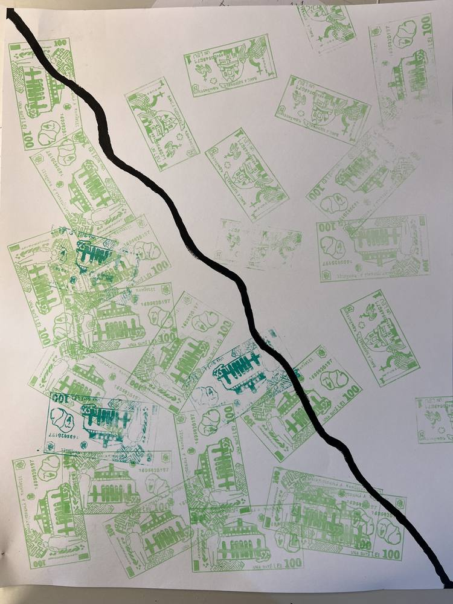
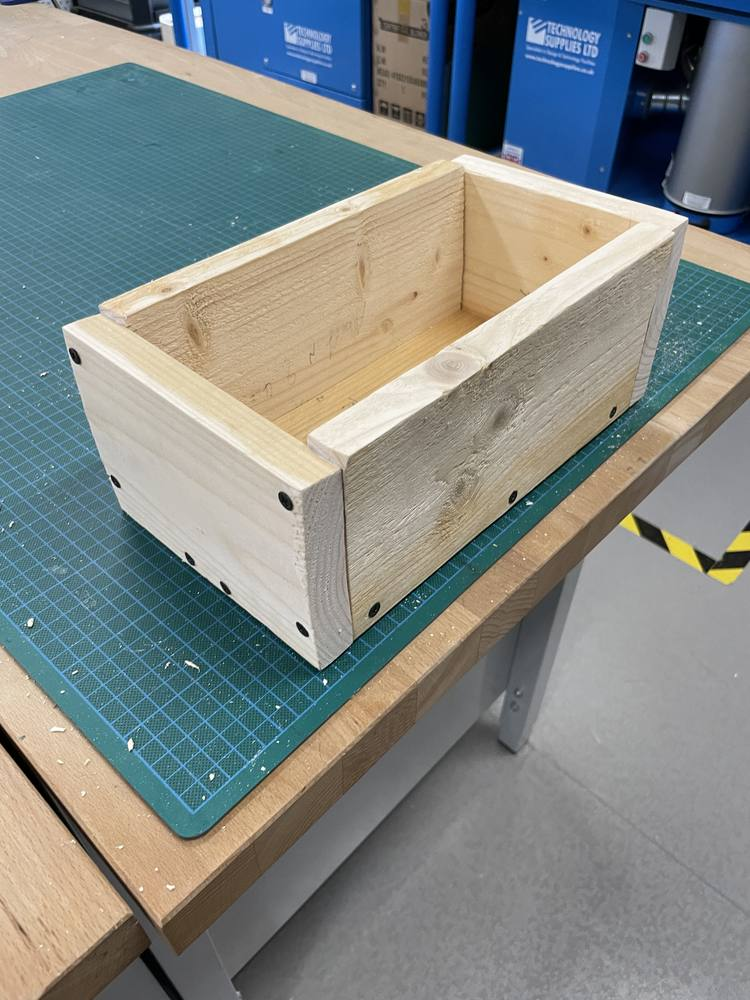
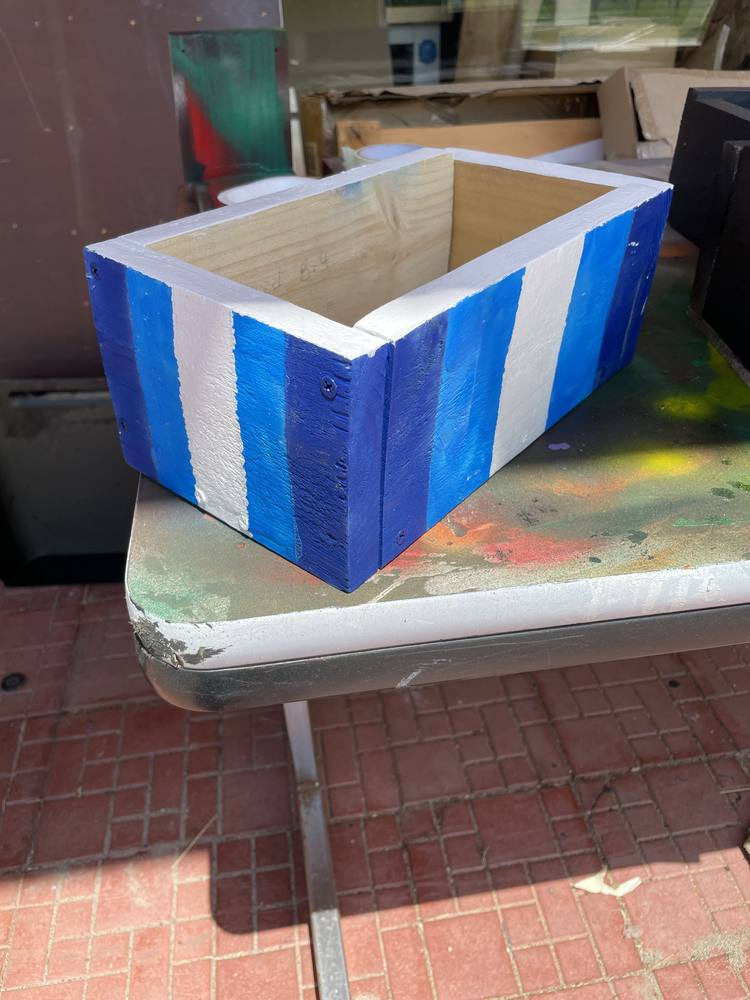
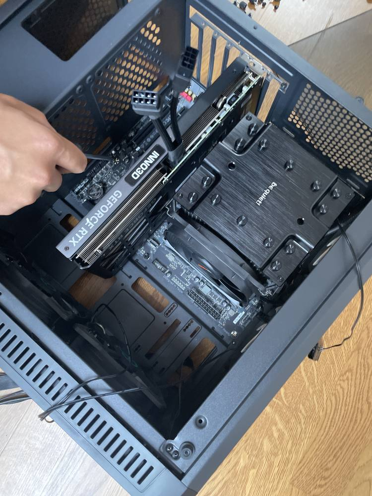
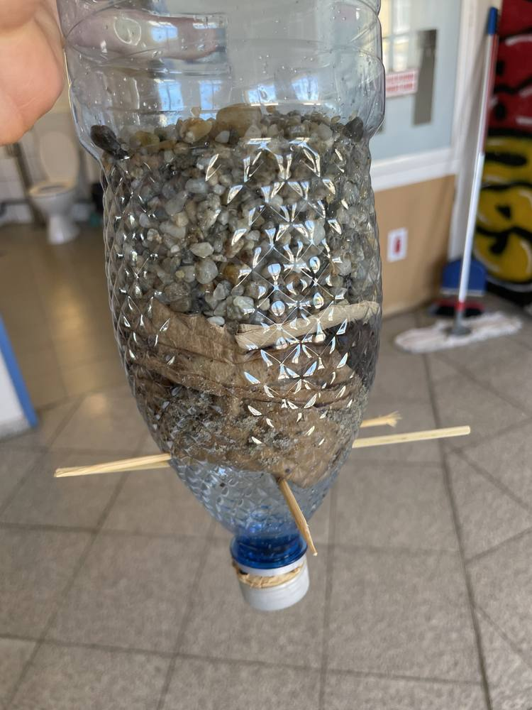
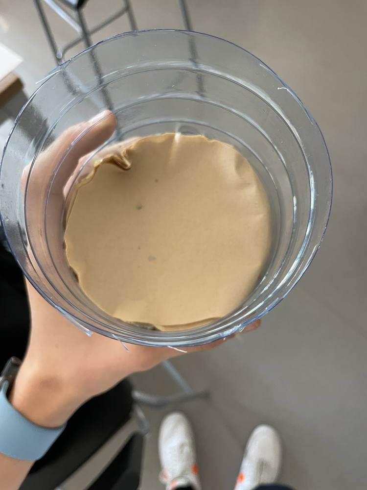

Mendr
iOS app · Live on the App Store
Mendr: Better Mornings is an iPhone app for sleep and energy.
iOS app · Live on the App Store
Mendr: Better Mornings is an iPhone app for sleep and energy.

Top 100 of 486 · UnivaBio 2026
A browser app for families caring for an older parent on many medicines.
Kaggle · In progress
An entry in a Kaggle competition on decoding imagined movement from a low-cost 8-channel EEG headset, aimed at rehabilitation.

March 2024
Romanian banknotes, the 1 leu and the 100 lei, printed in green again and again across a large sheet, with a black line running from corner to corner.
May 2024
A ball rolls down a wooden rail set on a desk, leaves the edge and lands on a target board on the floor.


May – June 2022
Cut and screwed together from wood, then masked with tape and spray-painted in blue and white stripes.

April 2023
Putting together a desktop PC with a GeForce RTX graphics card and a be quiet! tower cooler.


May – June 2023
A cut plastic bottle hung upside down on wooden skewers and filled in layers: gravel, a dark layer and a paper filter.